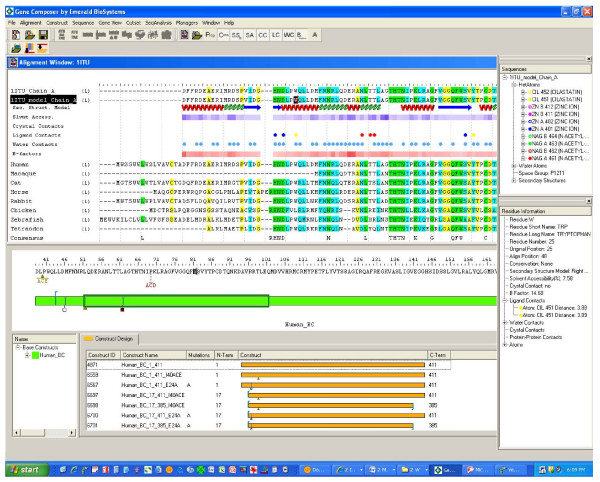
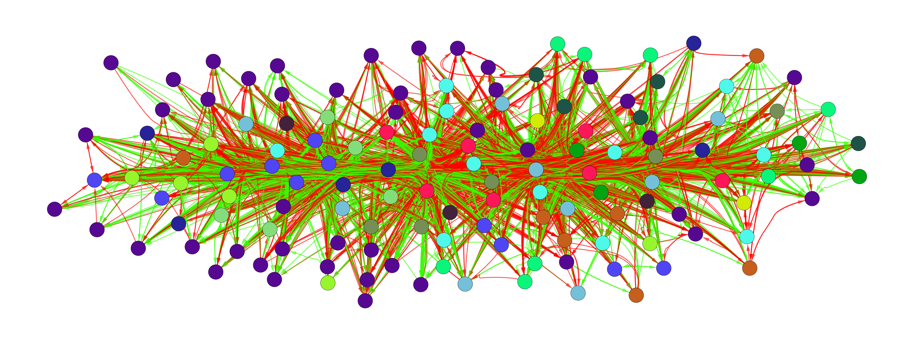

Bioinformatics: Where Biology Meets Data Science
Bioinformatics represents the intersection of biology, computer science, and data analytics. It enables us to decode the complexity of life by analyzing biological data at unprecedented scales.
🧬 DNA Analysis
Bioinformatics tools process genome sequencing data, identifying genes and mutations that influence health and disease.
🔬 Drug Discovery
Computational methods accelerate drug development by simulating molecular interactions and predicting drug effectiveness.
🧪 Protein Structure
Advanced algorithms predict protein folding patterns, crucial for understanding disease mechanisms and developing treatments.
📊 Big Data in Biology
Modern sequencing generates massive datasets, requiring sophisticated algorithms and high-performance computing.
Exploring the Bioinformatics
Bioinformatics is an interdisciplinary field that combines biology, chemistry and computer science to analyse and interpret biological data. Imagine having a large amount of genetic information, such as DNA sequences, proteins and other biological molecules. These data are extremely complex and voluminous, so scientists use advanced advanced computer tools to analyse and derive meaning from them.
The various fields:
Genetics and Genomics
Genetics studies genes, which are the fundamental units of heredity. Genomics is a branch of genetics that analyses the entire genome of an organism, i.e. the entire set of DNA. Bioinformatics helps researchers to compare DNA sequences, identify genetic variations and understand how these influence the characteristics and health of organisms.
analysis of a genome using Gene Composer software
Structural Bioinformatics
This branch deals with predicting and analysing the three-dimensional structure three-dimensional structure of biological molecules such as proteins, RNA and DNA. Proteins, for example, are chains of amino acids that fold into complex shapes. Knowing the structure of a protein is crucial to understanding how it works and how it can interact with other molecules. Structural bioinformatics uses computer models to simulate these structures and study them in detail.
Systems biology
Systems biology considers living organisms as complex systems made up of many interacting parts. Using mathematical models and computer simulations, researchers researchers can study how these interactions change over time and how they influence the behaviour of the whole organism. This approach helps to understand complex phenomena such as cell growth, immune response immune response and metabolism.
Biological networks
Biological networks study the interactions between genes, proteins and other molecules within cells. These interactions are often represented as networks, where the nodes are the molecules and the lines connecting them represent the interactions. By analysing these networks, researchers can identify patterns and better understand how biological processes work. This is crucial for discovering new therapies for diseases complex diseases such as cancer.
Applied Informatics in Biology
Bioinformatics uses various computer tools such as programming languages, machine learning algorithms and artificial intelligence to analyse biological data. For example, machine learning algorithms can be used to predict the the function of new proteins based on existing data. Artificial intelligence can help identify new drugs by simulating how molecules will interact with biological targets.
Collaborative projects
There are also many collaborative projects in bioinformatics that using distributed computing, such as Folding@Home and Rosetta@Home. These projects harness the computing power of thousands of computers around the world to perform complex complex simulations of protein structures, helping researchers researchers to solve problems that would otherwise require years of work.
Conclusion
In summary, bioinformatics is essential for managing and interpreting the enormous amount of biological data generated by modern research. Using advanced computer tools, bioinformaticians bioinformaticians can make fundamental discoveries that improve our understanding of life and contribute to the development of new medical therapies.
Bibliography
https://www.treccani.it/enciclopedia/la-grande-scienza-bioinformatica_(Storia-della-Scienza)/ https://tech4future.info/bioinformatica-cose-cosa-studia